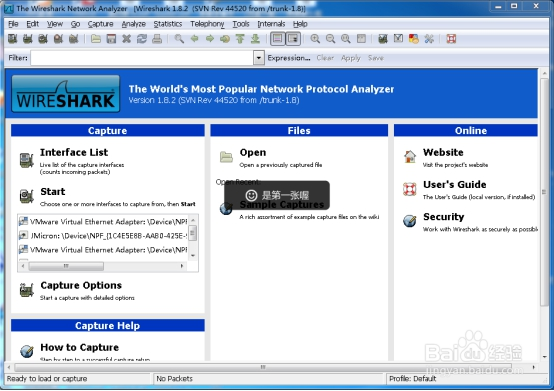
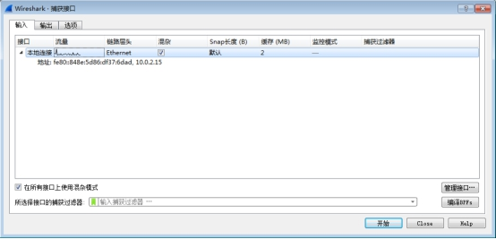
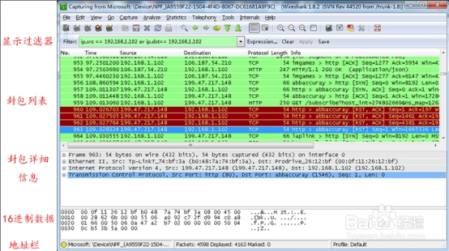

屏蔽门专业通信中断或发送与现场不符的报警报文
ISCS与PSD专业之间的通信采用ModBus TCP/IP协议，在FEP上采集报文数据不一定能反馈底层网卡的数据，故需要使用工具直接采集硬件网卡内的TCP协议数据交互信息。
3.1Wireshark软件（适用于XP32位系统）
4.1数据截取
4.1.1在PSD工控机处安装Wireshark软件；
4.1.2点击打开Wireshark软件如下图所示

4.1.3开始导航栏内的Capture选项，再点击Interface选项（部分版本为Option）选择所需截取的通信端口，此处以物理网卡设备为单位区分端口。如下图所示：

勾选对应网卡后点击开始进行录制。
4.2数据分析
4.2.1打开录制后的数据报文，观察是否正常进行数据收发

4.2.2
其中Source为源地址，Destination为目标地址。在16进制数据栏内，观察是否有ff字段，并应遵循以下规范。
|
描述 |
长度（字节） |
定义 |
Header |
TransactionIdentifier |
2 |
TCP 顺序号 |
Protocol Identifier |
2 |
0x0000 |
|
Length |
2 |
0x0006 |
|
Unit Identifier |
1 |
0xFF |
|
Data |
Function Code |
1 |
0x04 |
Starting Address |
2 |
0xXXXX |
|
Number of Registers |
2 |
N |